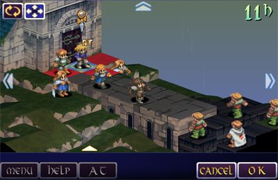
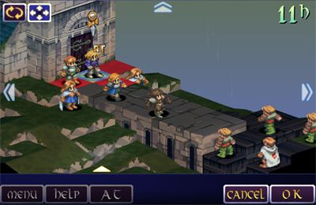

Projects and TechLauncher
Most of the proposed projects are now available to look at on the TechLauncher website and our preferences are due. The project idea I was originally going to propose came up from another student so I put my first preference as that. His idea was more set in stone as an RPG game. It was explained in his project brief that he was really into a lot of the same games that I had considered my favorites for a long time.
 

I thought this was great because I would be working with likeminded people if I got into this group. I found some other groups interesting such as the Magic card recognition group and the Rating systems group.
The lecture this week was kind of a big advertisement for the CBR Innovation Network but it was still quite interesting. It seems like there is a huge network of people actually getting behind TechLauncher so that makes me even more excited for team formation day and the future of my group. My first preference is a startup so I am interested how things will work regarding startups.